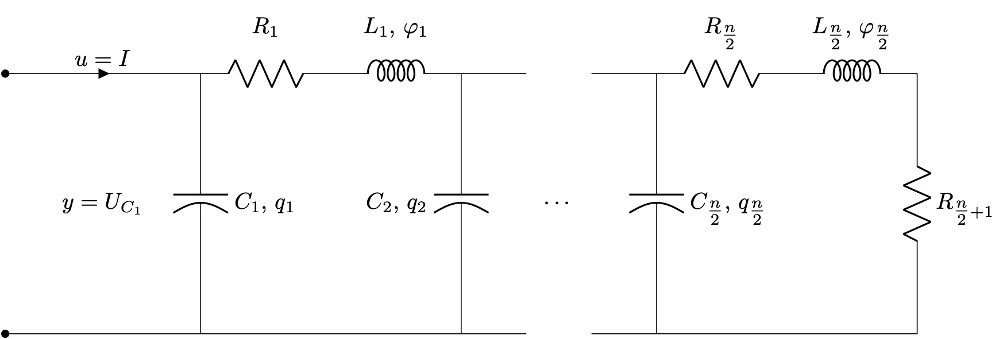

RCL Ladder Network (ODE)
Description
This benchmark considers a linear, time-invariant pH-ODE model for electrical ladder networks as described and used for numerical examples in [1, 3].

The network consists of $N=\tfrac{n}{2}$ cells, where each cell $i=1,\ldots,N$ contains a resistor with resistance $R_i$, capacitor with capacity $C_i$, and inductor with inductance $L_i$. The last cell contains one additional resistor with resistance $R_{\tfrac{n}{2}+1}$.
The input of the system is chosen as the current $I$ and the output is the voltage over the first capacitor $U_{C_1}$. The state variables are alternating the charge $q_i$ of the capacitors and the flux $\phi_i$ of the inductors, i.e.,
\[ x(t) = \begin{bmatrix} q_1(t), \phi_1(t), \ldots, q_{\tfrac{n}{2}}(t), \phi_{\tfrac{n}{2}}(t) \end{bmatrix} \in \R^{n}.\]
This choice yields the following pH system matrices
\[ \begin{aligned} J &= \begin{bmatrix} 0 & -1 & 0 & 0\\ 1 & \ddots & \ddots & 0\\ 0 & \ddots & \ddots & -1\\ 0 & 0 & 1 & 0 \end{bmatrix}, & R &= \mathrm{diag}(0, R_1, 0, R_2, \cdots, R_{\tfrac{n}{2}} + R_{\tfrac{n}{2}+1}),\\ Q &= \mathrm{diag}(C_1^{-1}, L_1^{-1}, C_2^{-1}, L_2^{-1}, \cdots, C_{\tfrac{n}{2}}^{-1}, L_{\tfrac{n}{2}}^{-1}), & G^\top &= \begin{bmatrix} 1 & \cdots & 0 \end{bmatrix}. \end{aligned}\]
Parameters
The number of cells $N = \tfrac{n}{2} \in \N$ can be chosen by the user and the input dimension can be set to $m = [1, 2]$. The remaining parameters $R_i$, $C_i$, and $L_i$ can be chosen as positive real numbers. Following [3], the default parameters are
\[\begin{aligned} N &= 100, \\ m &= 1, \\ R_1 &= \ldots = R_{50} = 0.2, \\ R_{51} &= 0.4, \\ C_1 &= \ldots = C_{50} = 1, \\ L_1 &= \ldots = L_{50} = 1. \\ \end{aligned}\]
Interface
The system matrices can be obtained via the RCLLadderConfig.
PortHamiltonianBenchmarkSystems.RCLLadderConfig — TypeThis struct configures port-Hamiltonian ODE RCL ladder network described in [3] and [1].
Arguments
n_cells::Int: The number of cells in the ladder networkio_dim::Int: The input and output dimension of the systemR::Vector{T}: The resistances (Vector of lengthn_cells + 1)C::Vector{T}: The capacitances (Vector of lengthn_cells)L::Vector{T}: The inductances (Vector of lengthn_cells)
Outputs
config: The configuration struct for the system. The system can subsequently be created withconstruct_system(config)
PortHamiltonianBenchmarkSystems.RCLLadderConfig — MethodRCLLadderConfig(id::String)External constructor providing various default instances of RCLLadderConfig.
Arguments
id: The identifier of the desired configuration. Use
Outputs
config: Instance ofRCLLadderConfig.
In more detail, the system matrices from [3] can be obtained as follows:
using PortHamiltonianBenchmarkSystems
config = RCLLadderConfig("PS10")
J, R, Q, G = construct_system(config)Alternatively, the parameters can be specified as follows:
using PortHamiltonianBenchmarkSystems
config = RCLLadderConfig(2, 2, [1, 2, 3], [4, 5], 6)
J, R, Q, G = construct_system(config)The config accepts scalars or vectors for the parameters R, C, and L. If a scalar is provided, it will be applied to all components of the respective type. If a vector is provided, it must have the correct length.
References
- [1]
- S. Gugercin, R. V. Polyuga, C. Beattie and A. van der Schaft. Structure-Preserving Tangential Interpolation for Model Reduction of Port-Hamiltonian Systems. Automatica 48, 1963–1974 (2012).
- [3]
- R. V. Polyuga and A. van der Schaft. Structure Preserving Model Reduction of Port-Hamiltonian Systems by Moment Matching at Infinity. Automatica 46, 665–672 (2010).